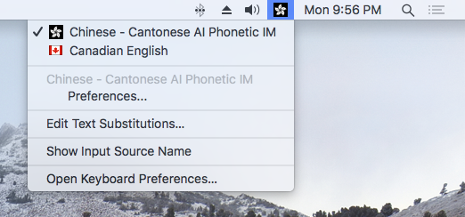
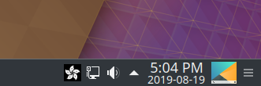
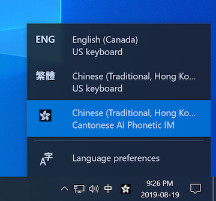

Here’s the latest release of my Cantonese Artificially-intelligent Phonetic (CAP) Input Method for macOS, Linux, and Windows 10. Its statistical language model now incorporates the 2019-08-02 Chinese version of the Wikipedia, among other sources. I also corrected the pronounciation of some words such as 鵪鶉 (am chun), 芫茜 (yim sai), and 猥瑣 (wui soh). This release also uses a new and prettier icon.
This release of CAP uses a new icon that I’ve been using personally in recent weeks. This is what it looks like on macOS:

On KDE/Linux:

And on Windows:

If this release replaces an existing installation on macOS or Windows, the new icon should appear instead of the old one automatically. On KDE, you may need to clear the icon cache using the command rm ~/.cache/icon-cache.kcache and re-login.
Download this release of the CAP input method for your platform with one of the following links.
| Version | Download Location | MD5 Checksum |
|---|---|---|
| macOS | Chinese - Cantonese AI Phonetic IM.zip |
bc324c815981bdfa387b2c1094d7b7d1 |
| Windows 10 (64-bit) | CAPInstallerReleaseNew.msi |
9c50aa1146e81b18aea639ccd0f90e1a |
| Linux | fcitx-cap_1.0.0_amd64.deb |
21f455e0ba68655d184e5b7ae9af622d |
To installing CAP on Windows 10 (64-bit):
CAPInstallerReleaseNew.msi and follow the instructions for the previous version.Installing and debugging input method editors (IMEs) on Windows can be tricky because there is so much variation in system and library versions and configurations. Sometimes one may find better success by installing CAP manually. Try the following if the installer method above fails.
Download and install both the 32-bit (x86) and 64-bit (x64) versions of Microsoft Visual C++ redistributable packages for Visual Studio 2015, 2017 and 2019.
Download this ZIP file containing the components of the CAP input method. Unzip and move the entire “Sixth Happiness” directory into C:\Program Files. Windows 10 may say “You’ll need to provide administrator permission to copy this file”. Make sure you have permission and that the operation completes successfully.
CAP.dll manually. Execute the following commands in a command prompt window run as administrator. regsvr32 "C:\Program Files\Sixth Happiness\CAP\x64\CAP.dll"
regsvr32 "C:\Program Files\Sixth Happiness\CAP\Win32\CAP.dll"To install CAP manually on Windows 10 (32-bit), try following the above instructions for manual installation on Windows 10 (64-bit). However, install only the 32-bit version of Microsoft Visual C++ redistributable package vc_redist.x86.exe and only register the 32-bit CAP.DLL.
Installing of CAP on macOS and Linux is the same as for the previous version. The macOS version has been tested on High Sierra and Mojave. The Linux version has been tested on Kubuntu 18.04.
Note that according to CAP’s license, you can use it for personal and non-commercial purposes, and are prohibited from redistributing it, or any of its parts.
Otherwise, have a lot of fun with it!
Category: Programming